Portraits
↓
↓
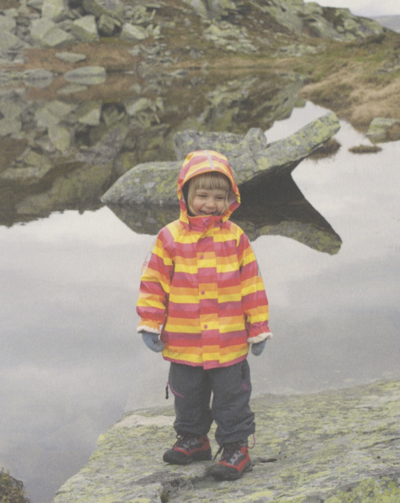
Ebba in Jotunheimen. 2013
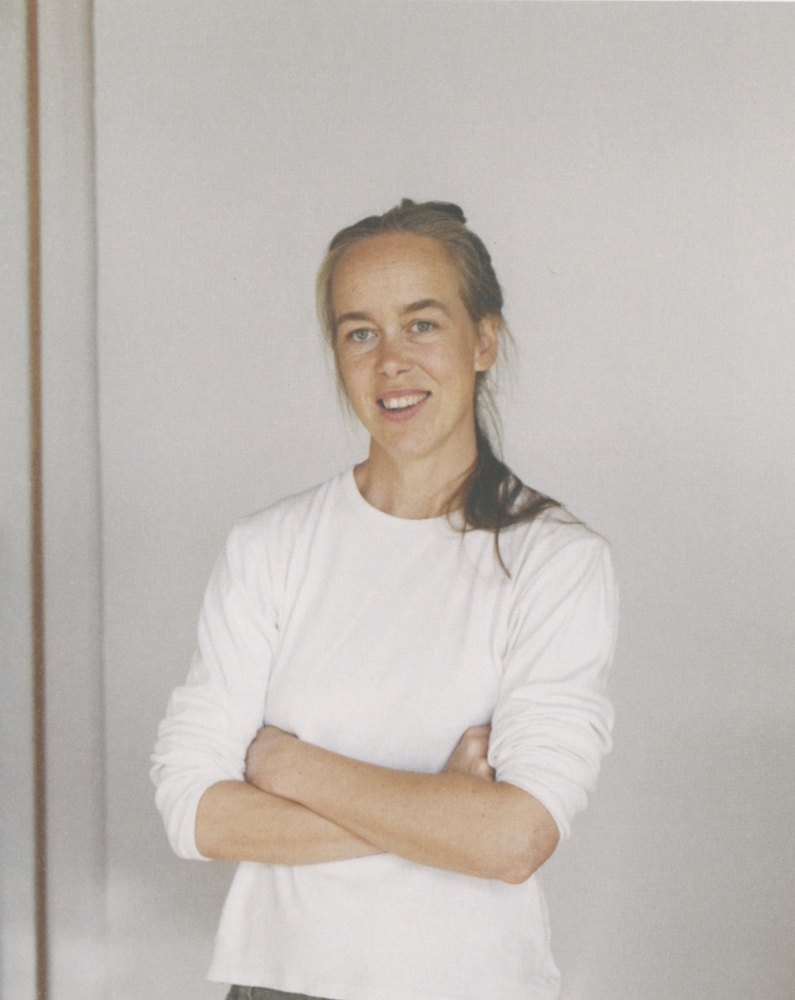
Myren Gård, Valdres. 2013
Oppsal, Oslo. 2012
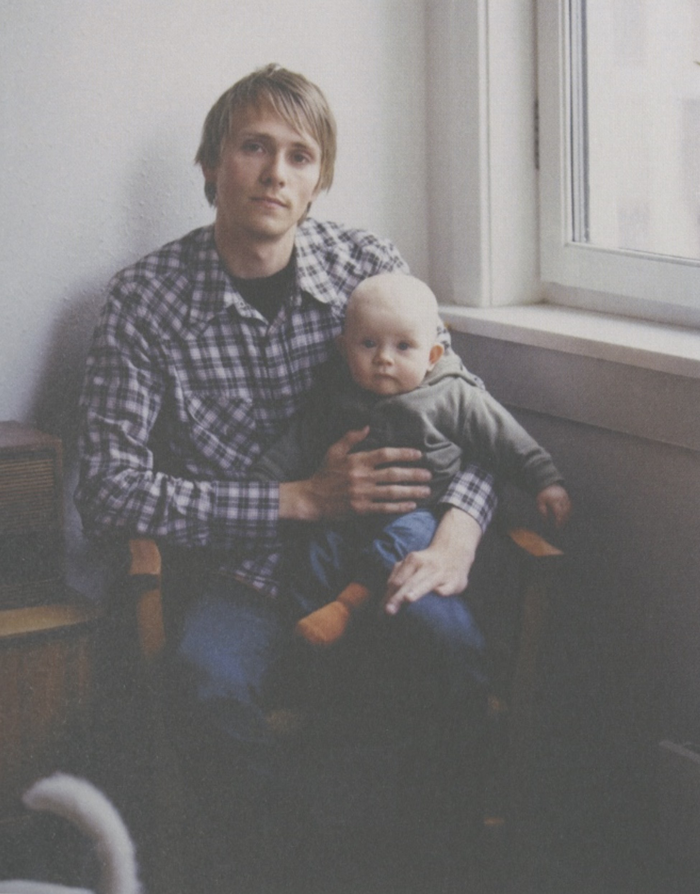
Oslo. 2012
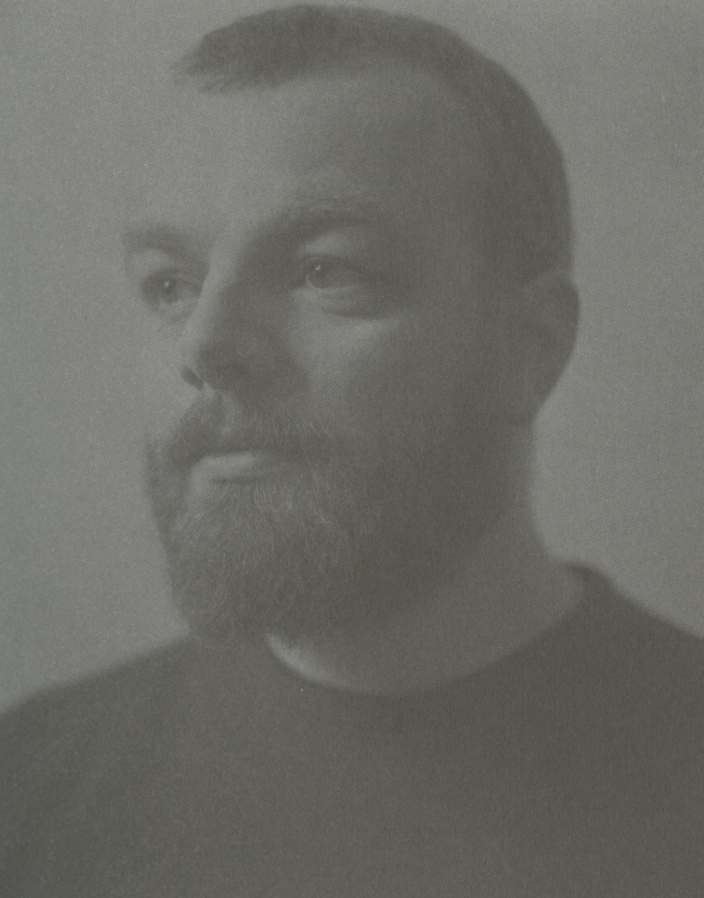
Nesodden. 2012
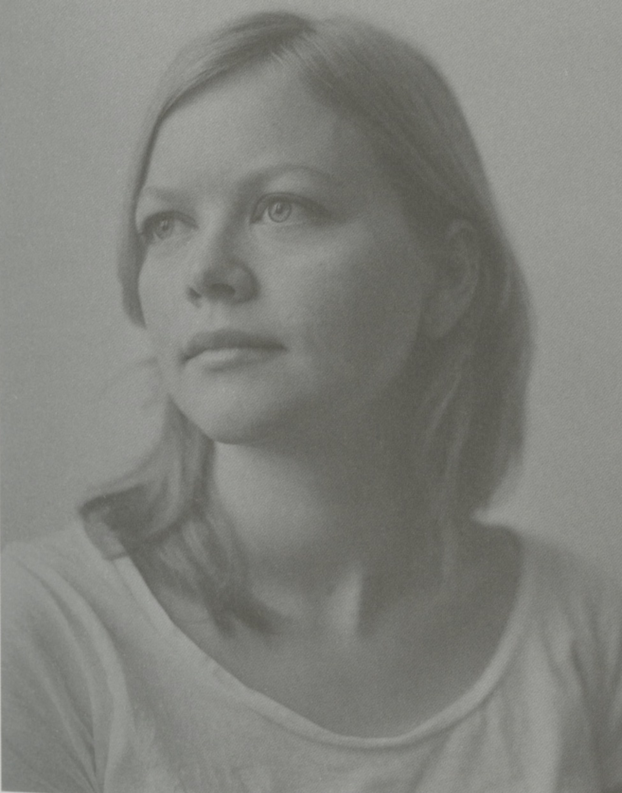
Filefjell. 2011
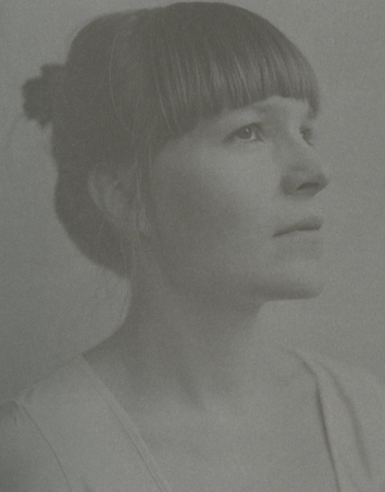
Tronfjell, Alvdal. 2011
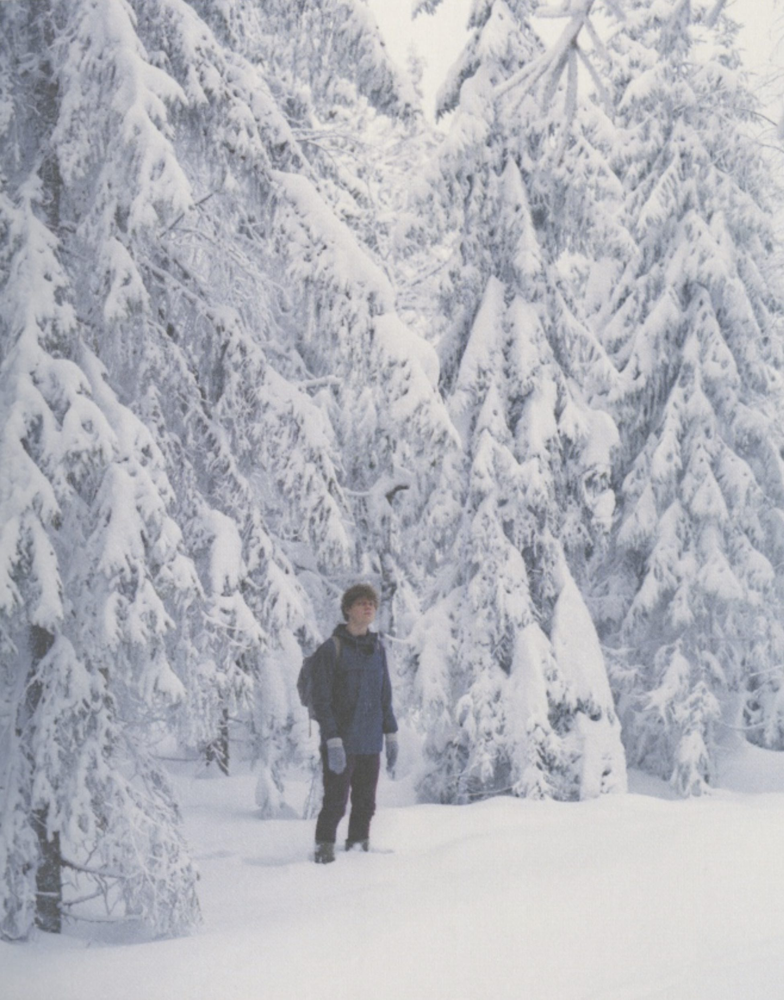
Hvalstad. 2010
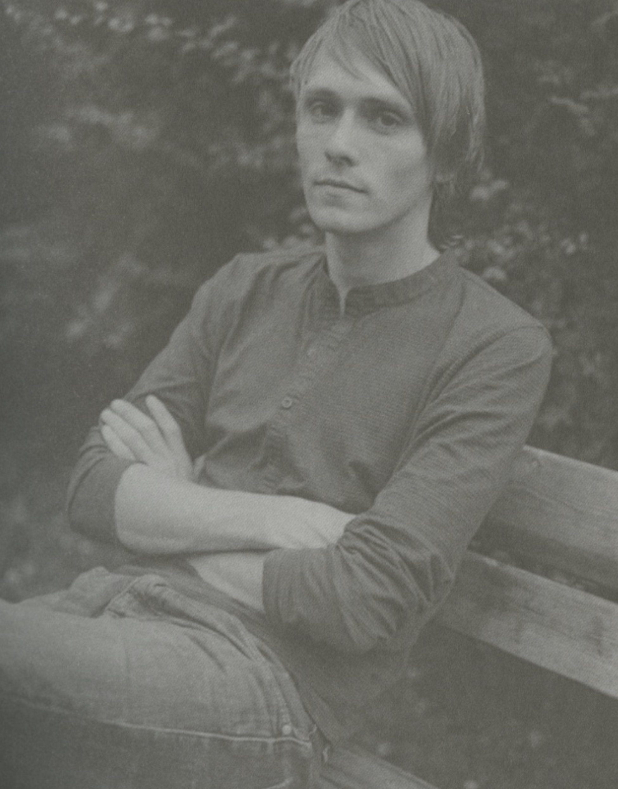
Oslo. 2008
 Torshovdalen, Oslo. 2008
Torshovdalen, Oslo. 2008
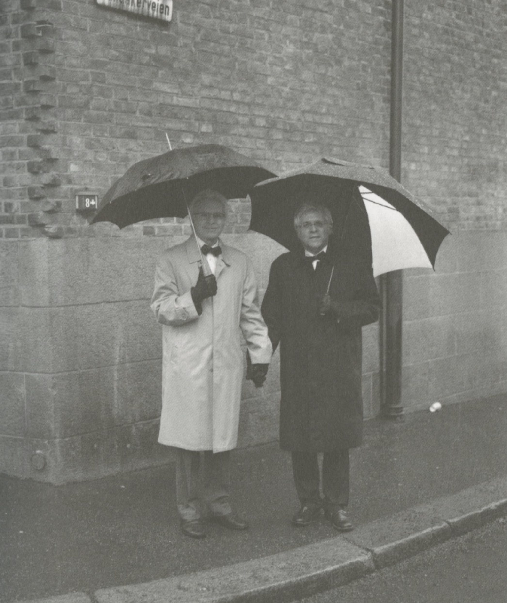
Trengereid. 2006
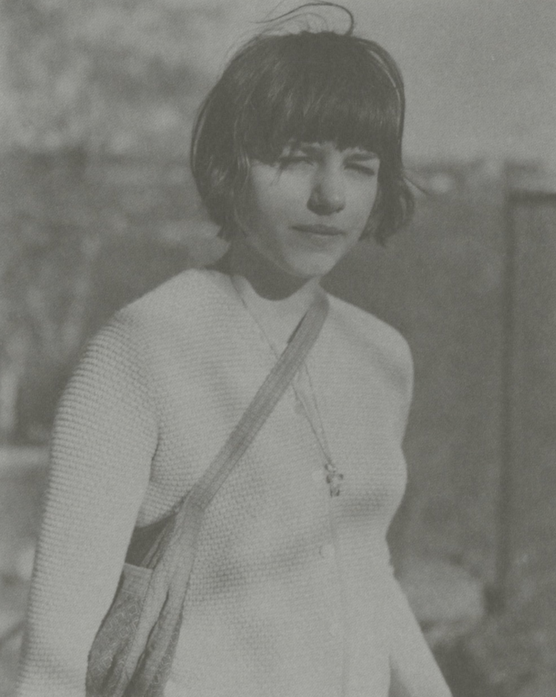
Vidden, Bergen. 2005
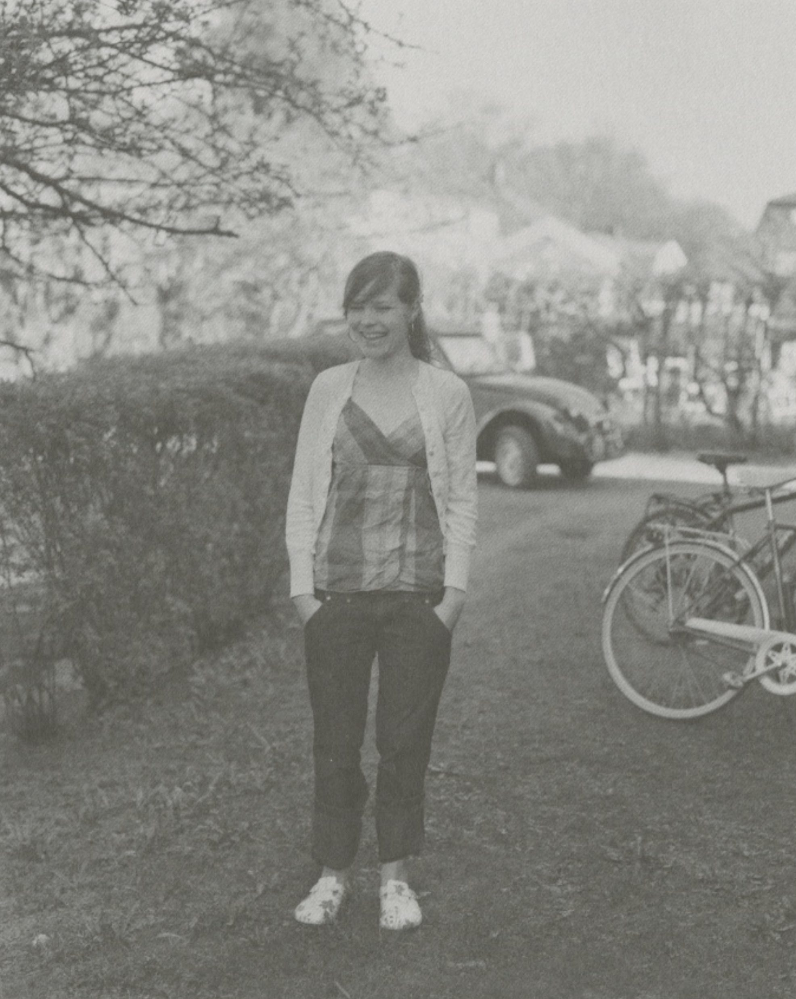
Ljosuregga. 2005